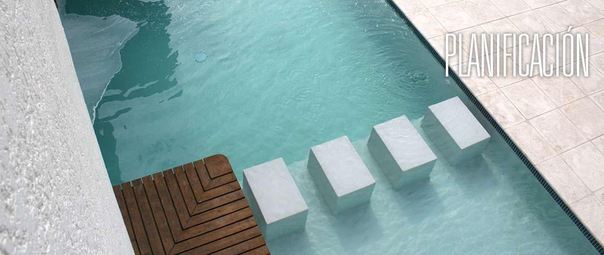

- 
Misión
Ser la solución para generar espacios funcionales y agradables a través de una arquitectura creativa y sistemas constructivos innovadore
Visión
Hacer de AG Constructores, una empresa reconocida y líder en servicios de arquitectura y construcción en la región Centro América, a través del trato personalizado, ético y profesional, teniendo como meta la satisfacción de nuestros clientes.
Valores
En nuestra empresa sabemos que nuestros valores nos llevarán a tener un progreso íntegro con crecimiento moderado.
- Excelencia
- Honestidad
- Responsabilidad
- Compromiso
- Ética
- Calidad Humana